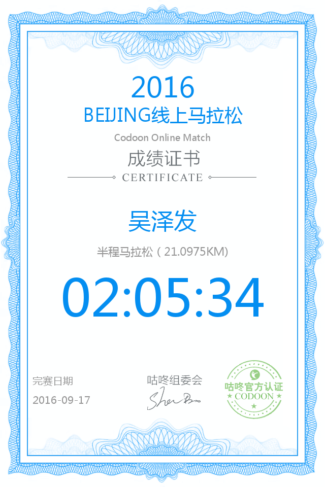

关于马拉松
时间：2016.9.17
作者：吴泽发

以前从来没跑过那么远的路程，也没想过自己能完成这么远的路程，今天鼓足了勇气尝试了人生的第一个半程马拉松，庆幸的是自己也能坚持咬牙地跑下来，回来的时候感觉脚都不是自己的了，已躺在床上无法动弹...
从第一公里开始，肚子就开始微痛，再到十公里的时候脚已经麻木了，到十五公里的时候感觉已经全身脱水了，随时都可能晕倒，还好一直坚持到了最后...
我不会忘记最后那五公里的艰辛、还有最后跑完躺在草坪上的那种幸福感，我会再接再厉争取下一次能跑更好的成绩，今天是值得纪念的一天，2016.9.17，我完成了半程马拉松，离全程马拉松又近了一步。